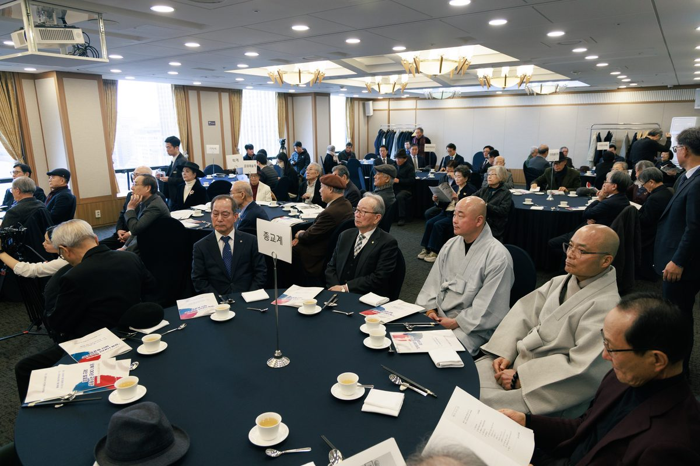
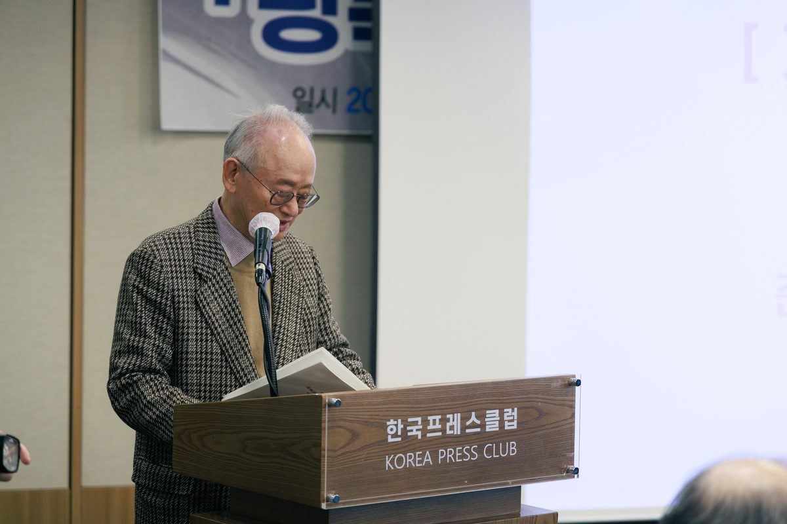
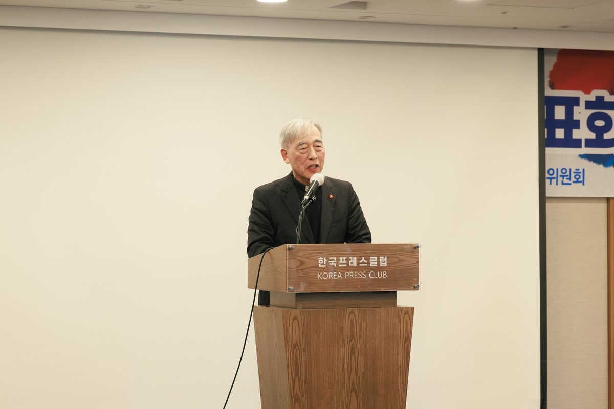
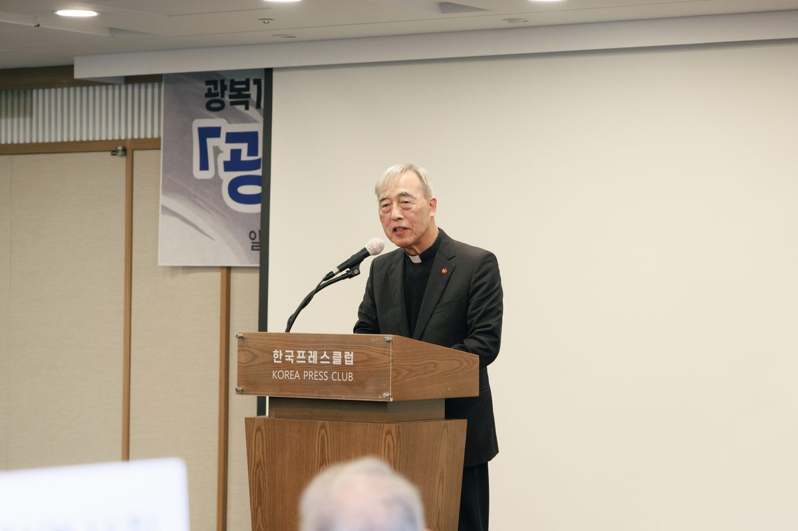
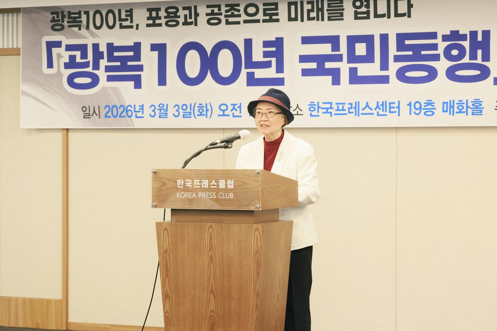
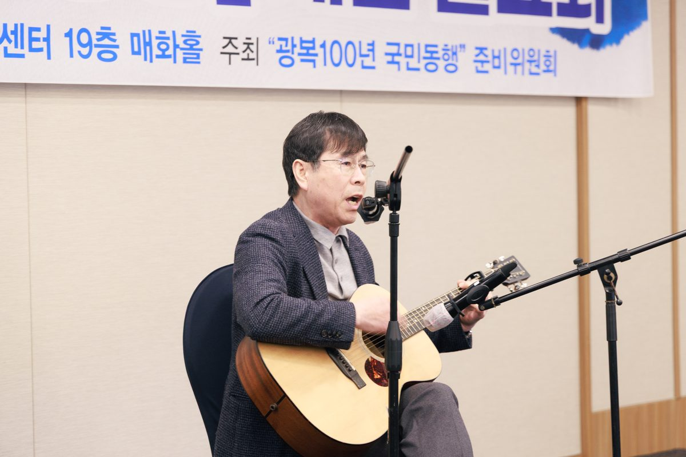
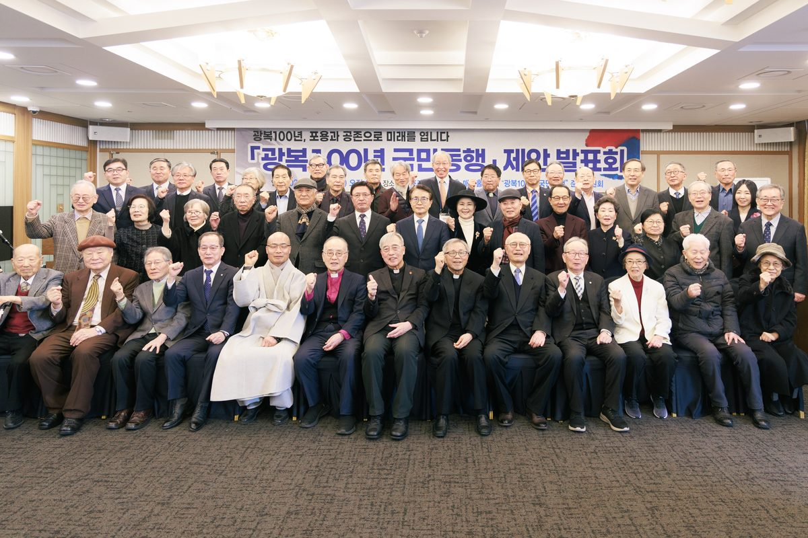

Elder Messages
각계 152인이 광복100년 국민동행에 뜻을 함께합니다.
천주교 / 기독교 / 불교 / 원불교 / 천도교
총 24명
대학 교수 · 총장 · 전직 장관급 학자
총 21명
문학 / 국악
총 12명
전직 언론인 / 출판인
총 12명
변호사 / 전직 헌법재판소 재판관
총 4명
육·해·공·해병대
총 7명
사회단체 대표 · 이사장
총 10명
여성단체 · 학계 · 종교계 여성 지도자
총 9명
환경재단 · 생태운동 지도자
총 6명
해외 동포 단체 대표
총 1명
대전충청 / 인천 / 강원 / 대구경북 / 부산울산경남 / 광주전남 / 전북 / 제주
총 46명
"지금 우리 사회에 필요한 것은 더 센 말이나 더 큰 목소리가 아닙니다. 상대를 밀어내지 않는 자세, 다름을 틀림으로 받아들이지 않는 태도, 이길 수 있어도 멈출 줄 아는 마음입니다."
— 이부영 준비위원장, 개회사
"분열과 대립을 넘어, 포용과 절제로 우리 사회의 균형을 다시 세우는 일은 누군가 대신해 줄 수 없는 모두의 과제입니다."
— 고희범 전 제주시장
"우리는 이 슬픈 현실 앞에서 변명의 여지 없는 역사적·사회적 책임을 통감합니다. 고통스러운 성찰과 깊은 참회 끝에 부끄러움을 무릅쓰고 겨레와 역사 앞에 나섭니다."
— 정영순 대한고려인협회 회장










